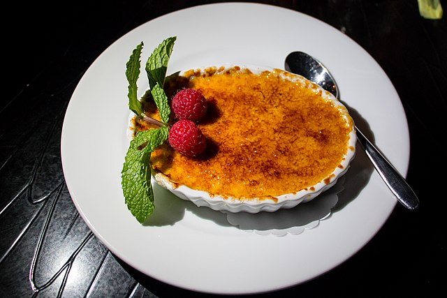

Home
Crème Brûlée

Image source: WIKIMEDIA COMMONS
Description
Crème brûlée is the ultimate French dessert—silky smooth vanilla custard nestled beneath a perfectly caramelized sugar crust that shatters with the tap of a spoon.
Each bite is a contrast of warm, crisp topping and cool, creamy indulgence. Simple yet sophisticated, it’s a dessert that never fails to impress or satisfy.
Enjoy!
Ingredients
- 50 g powdered sugar, plus a teaspoon for topping (brown sugar preferred)
- Vanilla (a sachet of vanilla sugar, a vanilla pod, or liquid vanilla)
- 3 egg yolks
- 10 cl whole milk
- ¼ l liquid cream
- Lemon zest, a pinch of anise for a 'Catalan style' touch, or a few drops of orange blossom water
Steps
- Mix the milk, cream, and egg yolks, then add the sugar and vanilla (or other flavoring).
- Pour into small ramekins.
- Bake in the oven for 35 to 40 minutes at thermostat 4 (approximately 120°C or 250°F).
- Toward the end, sprinkle the tops with the remaining teaspoon of sugar.
- Caramelize the tops under a grill or with a kitchen torch, if available.
- It's ready! Enjoy the taste!